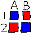

Navigation
index
next
|
Bottleneck 1.2.1 documentation
»
Bottleneck
¶
Fast NumPy array functions written in C.
Bottleneck
Benchmark
Where
License
Install
Unit tests
Function reference
Reduce
Non-reduce
Non-reduce with axis
Moving window functions
Release Notes
Bottleneck 1.2.1
Older versions
License
Bottleneck license
Other licenses
Indices and tables
¶
Index
Module Index
Search Page

Table Of Contents
Bottleneck
Indices and tables
Next topic
Bottleneck
This Page
Show Source
Quick search
Navigation
index
next
|
Bottleneck 1.2.1 documentation
»